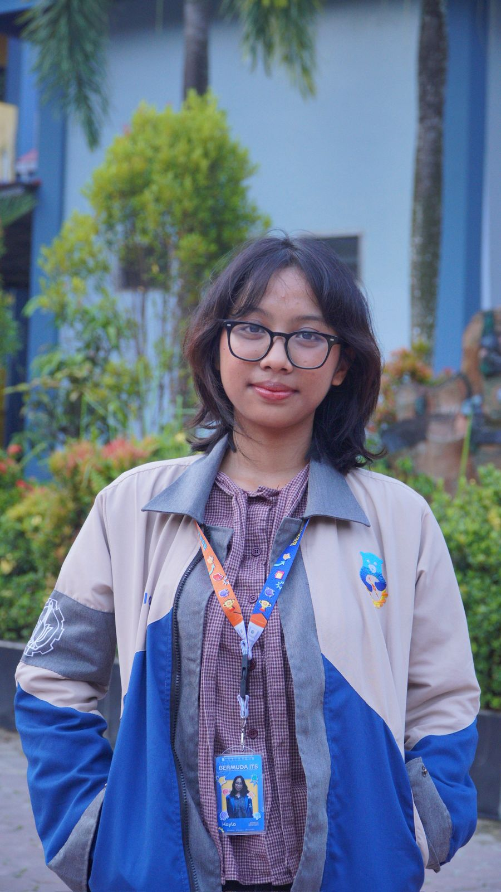

Kayla Riza Putri Irjayanto
Dedicated to continuous growth and building collaborative relationships to solve complex problems. Focused on developing innovative solutions that create a lasting and positive impact within my community.
Skills & Competencies
Technical Skills
Soft Skills
Education
Current GPA: 3.50/4.00
Work & Experience
Digitized and restructured complex National Science Olympiad (OSN) academic content into standardized JSON formats, ensuring high-quality data structure suitable for LLM training purposes.
- Managed official correspondence, ensuring smooth operational oversight and effective internal communication.
- Designed engaging 2D game assets and character sprites using Aseprite, collaborating with developers in Unity environment.
- Managed comprehensive event documentation and spearheaded visual identity development for various organizational activities.
Extra Information
Mengembangkan sebuah pengalaman web interaktif bertema musiman. Proyek ini berfokus pada penciptaan antarmuka pengguna (UI) yang menarik dan responsif, serta penerapan logika frontend sederhana untuk meningkatkan keterlibatan pengguna.
Berencana merancang bangun platform web untuk menghubungkan donatur dengan kebutuhan masyarakat lokal secara transparan. Proyek ini akan mencakup pengembangan backend yang aman, manajemen basis data donasi, dan integrasi antarmuka yang mudah digunakan.
Bercita-cita untuk menggabungkan latar belakang Teknik AI dengan analisis statistik untuk menginterpretasikan dataset yang kompleks. Tujuannya adalah menemukan wawasan (insights) yang dapat ditindaklanjuti untuk memecahkan masalah dunia nyata dan mendorong pengambilan keputusan strategis.